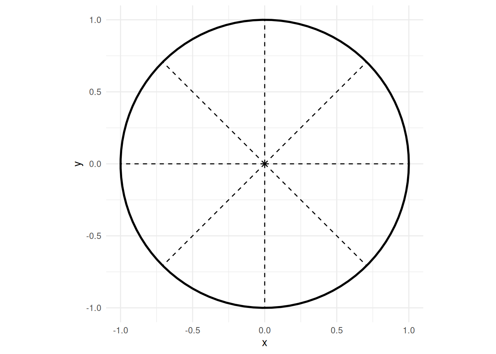

Chapter 13 Hapsere, tapas med videre.
library(ggplot2)
generate_circle <- function(center = c(0, 0), radius = 1, n_points = 100) {
theta <- seq(0, 2 * pi, length.out = n_points)
data.frame(
x = center[1] + radius * cos(theta),
y = center[2] + radius * sin(theta)
)
}
circle_data <- generate_circle(center = c(0, 0), radius = 1)
# Generer data til linjerne
generate_lines <- function(center = c(0, 0), radius = 1.5) {
angles <- seq(0, 2 * pi, length.out = 9)[-9] # Otte vinkler (0, π/4, π/2, ..., 7π/4)
data.frame(
x = rep(center[1], each = length(angles)),
y = rep(center[2], each = length(angles)),
xend = center[1] + radius * cos(angles),
yend = center[2] + radius * sin(angles)
)
}
line_data <- generate_lines(center = c(0, 0), radius = 1)
ggplot() +
geom_path(data = circle_data, aes(x = x, y = y), size = 1) +
geom_segment(data = line_data, aes(x = x, y = y, xend = xend, yend = yend), linetype = "dashed") +
coord_equal() +
theme_minimal()## Warning: Using `size` aesthetic for lines was deprecated in ggplot2 3.4.0.
## ℹ Please use `linewidth` instead.
## This warning is displayed once every 8 hours.
## Call `lifecycle::last_lifecycle_warnings()` to see where this warning was
## generated.
13.1 Toskanske bønner
Jeg har aldrig forstået hvorfor de der hvide bønner skulle kunne bruges til andet end at kaste efter folk.
Indtil vi fik en anretning på en restaurant i Firenze vi havde fundet i en reklametryksag fra et dækfirma.
Fagioli all’uccelletto
- 600 gram hvide bønner (helt oprindeligt - cannellini)
- olivenolie
- lidt salvie blade
- to fed hvidløg
- 2 spsk tomat pure
- 4 ferske svinepølser (og her dur det altså ikke med grillpølser…)
- salt og peber
Bønnerne skal ligge i blød. Og så skal de koges. Gerne i noget bouillon.
Så varmer vi et par spiseskeer olie op på en pande med hvidløget - bare lad skindet være på dem, og knus dem med hånden - og salvien
Når olien har taget smag af hvidløget, og salvien er blevet sprød, hælder vi bønnerne op i panden, sammen med en god sjat af deres kogevand. Tilføjer tomatpastaen, rører rundt og koger ved lav temperatur. Lad dem simre i 20 minutter, pil pølserne ud af deres skind, og smid dem i. Lad det yderligere simre til pølserne er færdige. Server med brød. https://www.visittuscany.com/en/recipes/fagioli-alluccelletto-tuscan-style-beans-recipe/1111
13.2 Gougeres
Giver to fulde bageplader! 100 g hvedemel 90 g smør 1 dl vand 1 dl sødmælk 1⁄2 tsk. groft salt 1⁄2 tsk. sukker 3 store æg L/XL, sammenpiskede (ca. 180 g) 100 g revet gruyère ELLER 150 g frisk gedeost samt kværnet sort peber 1. Forvarm ovnen til 200° uden varmluft. Beklæd to bageplader med bagepapir. 2. Sigt melet – gerne ned på et stykke bagepapir, da det så kan hældes hurtigt i gryden. 3. Smelt smørret sammen med vand, mælk, salt og sukker i en gryde ved moderat varme. Når smørret er smeltet, bringes det hele i kog ved høj varme og tages straks af varmen. Hæld det sigtede mel i gryden, og rør med en træske, indtil det bliver til en fast, blød dej uden klumper, der slipper gryden. 4. Sæt gryden tilbage på kogepladen på svag varme for at ’riste’ dejen i et par minutter. Rør forsigtigt i dejen mens den ristes, og undlad at skrabe i bunden af gryden. Der vil sætte sig et meget tyndt lag dej, som ikke skal blandes sammen med resten af dejen igen. 5. Hæld dejen i en skål, og lad den køle lidt af (i ca. 5 minutter). Hvis du bruger røremaskine, kan du med fordel hælde dejen i røreskålen og lade den køre rundt med ’det flade piskeris’ på lav til mellemhastighed. På den måde køles dejen hurtigt. 6. Tilsæt de sammenpiskede æg ad tre omgange, og rør energisk efter gang for at få massen homogen. På røremaskine røres fortsat med lav til mellemhastighed med det flade piskeris. Når æggene tilsættes, vil dejen først se ud som om den skiller, men vil samle sig igen efter omrøring.
- Fortsæt med at røre i dejen i nogle minutter, så den bliver godt elastisk. Dejen er klar når den er glat og skinnende.
- Tilsæt revet gruyère eller snuldret gedeost (samt evt. peber eller krydderurter).
- Overfør dejen til bagepladen med sprøjtepose, skeer eller en isske. Sæt små klatter på størrelse med en femmer til hors d’oeuvre eller store, hvis de skal spises som mellemmåltid.
- Lav et kryds (gittermønster) på toppen af hver gougère med en gaffel dyppet i vand, så hæver de flottere i ovnen.
- Sæt bagepladen i den varme ovn, og skru så ned til 170°. Lad dem bage i mindst 20 minutter uden at åbne ovndøren. Bagetiden afhænger af størrelsen. De er færdige, når de er jævnt lysebrune. De må gerne bages lidt mindre end vandbakkelser, som skal fyldes med creme. De er nemlig lækrest, hvis de er svampede indeni. TIP: Sæt gerne en ekstra bageplade i ovnen under pladen med vandbakkelser, så de ikke bliver brændte i bunden.
13.3 Hummus
En dåse kikærter (vægt drænet?) En toppet spiseskefuld tahin Citronsaft 1 tsk spidskommen ½ dl koldt vand en isterning 3 spsk olie salt og peber
13.4 Bagt camenbert
I airfryer. Et stk camembert. Ikke en af de helt store - ikke en af de helt små.
Skær tern i overfladen af osten, en centimeters penge på hver led. Pensl med trøffelolie, hakket frisk timian, honning og chili. Noget mere end man lige tror.
Bag i airfryeren ved 160 grader i 12 minutter. Lækkert.
13.5 Cheeseburger buket
tortillas smøres med hakket kød, og skæres i halve. En trekant cheddarskive lægges på (bred side mod rundingen i tortillaen. Tortillaen rulles til et kræmmerhus, og placeres i en rundform. 12 stykker eller deromkring. i ovnen til kødet er tilberedt. Rdys med hakkede rødløg, hakkede cornichoner og server med ostesovs.
Jeg er skeptisk overfor det med det rå kød. Så jeg steger det først… ud mod rundingen af )